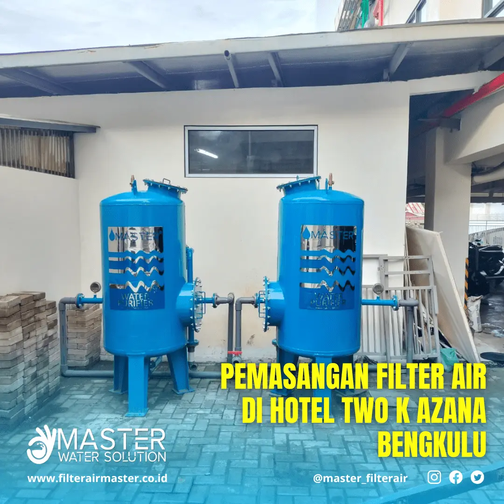

Filter Air Hotel Berkualitas | Jaga Kebersihan Air untuk Kenyamanan Tamu
Filter air hotel merupakan elemen penting dalam menjaga standar kebersihan, kenyamanan, dan kesehatan di sektor perhotelan. Air yang digunakan untuk mandi, mencuci, dan kebutuhan dapur harus jernih, bebas bau, serta aman bagi tamu dan staf.
Mengapa Hotel Membutuhkan Filter Air Berkualitas?
- Meningkatkan kepuasan tamu: Tamu akan lebih nyaman jika air bersih, tidak berbau, dan tidak meninggalkan residu.
- Melindungi peralatan: Mesin laundry, shower, dan keran lebih awet jika air tidak mengandung endapan atau karat.
- Meningkatkan citra hotel: Hotel dengan air bersih memiliki reputasi lebih baik di mata pengunjung.
Master Filter Air hadir dengan solusi filtrasi canggih untuk berbagai kebutuhan hotel, baik untuk kamar tamu, dapur restoran, hingga fasilitas laundry.
Keunggulan Filter Air Master untuk Hotel
- Sistem Multistage: Penyaringan bertingkat menggunakan pasir silika, karbon aktif, manganese green sand, dan zeolit.
- Material Berkualitas Food Grade: Aman digunakan untuk kebutuhan dapur dan konsumsi tidak langsung.
- Pilihan Manual & Otomatis: Menyesuaikan kebutuhan operasional hotel dari kecil hingga besar.
- Efektif Menyaring: Zat besi, mangan, bau tak sedap, lumpur, dan sedimen lainnya.
Studi Kasus: Pemasangan Filter Air Hotel TWO K Azana Bengkulu
Hotel TWO K Azana di Bengkulu mengalami tantangan kualitas air untuk kebutuhan harian dan laundry. Master Filter Air merekomendasikan dan memasang Filter Air Industri MI8 (8.000 liter/jam) dengan sistem manual dan konfigurasi media yang disesuaikan.
Langkah Pemasangan
Tim teknisi melakukan survei dan analisis kebutuhan air hotel, lalu memasang unit MI8 sesuai dengan lokasi yang tersedia. Proses instalasi memakan waktu kurang dari 1 hari dengan hasil langsung dirasakan oleh manajemen hotel.
Spesifikasi Filter Air Industri MI8
| ITEM | SPESIFIKASI |
|---|---|
| KAPASITAS | 8.000 liter/jam |
| DIMENSI TABUNG | Diameter 16 inch x Tinggi 65 inch |
| MEDIA FILTER | Silika, zeolit, green sand, karbon aktif |
| MATERIAL TABUNG | FRP (Fiber Reinforced Plastic) |
| VALVE | Manual (Multiport Valve) |
| UKURAN PIPA | 1,5 inch / 40 mm |
Manfaat Filter Air Hotel
- Air kamar mandi lebih jernih, tidak meninggalkan kerak di shower
- Mesin laundry lebih awet dan hasil cucian lebih bersih
- Operasional dapur lebih higienis dan efisien
- Meningkatkan review tamu dan nilai branding hotel
Galeri Pemasangan
Artikel Terkait
- Filter Air Industri untuk Perusahaan dan Pabrik
- Filter Air Rumah Tangga Anti Zat Besi dan Bau
- Informasi dan Konsultasi Gratis Filter Air Master
Kesimpulan
Memasang filter air berkualitas di hotel adalah langkah penting untuk meningkatkan layanan dan menjaga citra baik. Master Filter Air menawarkan solusi lengkap yang dapat disesuaikan dengan kebutuhan hotel skala kecil hingga besar.
Hubungi kami untuk survei lokasi gratis dan konsultasi produk terbaik melalui halaman Kontak.